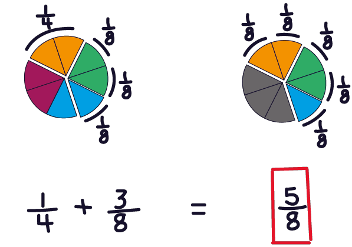

Contenido
Presentación
El presente material didáctico se elaboró con el propósito de contar con una
herramienta para el refuerzo y rescate de los saberes matemáticos básicos que
son necesarios para los estudiantes que ingresan al bachillerato en el medio
rural actual. Espero cualquier sugerencia para la mejora y enriquecimiento de este
material que, mediante el trabajo colegiado colaborativo, coadyuve en el apoyo
del proceso de aprendizaje de todos los jóvenes
estudiantes que lo requieran.
M.C. Héctor René Becerril Cejudo
Aguascalientes a septiembre de 2023
Introducción
Si bien se ha popularizado entre la juventud el uso del internet, será de gran
importancia primero enseñar a los alumnos como navegar en este sitio que
presentamos para este
curso de matemáticas básicas. El índice de contenido
es la principal guía
para la consulta de los diferentes temas que se abordarán en clase. Esta
plataforma digital servirá para el estudiante como una herramienta de
consulta permanente donde podrán acceder a cada uno de los temas. Esta
herramienta digital no pretende sustituir el trabajo docente que se desarrollará
en el aula, sino que busca apoyar el proceso de aprendizaje a través de
la exploración independiente que el alumno desarrollará fuera del salón
de clases. Los ejercicios aquí propuestos podrán complementarse con
otros más propuestos por el docente.
1. Números primos
Carrera y Grupo:
Período de aplicación:
Docente:
Meta de aprendizaje:
• Identificar los números primos y los números compuestos.
• Demostrar la condición de número primo y de número compuesto.
• Fomentar la investigación y consulta digital como medio de aprendizaje.
Evaluación:
• Estrategia de evaluación: heteroevaluación.
• Técnica de evaluación: procedimental, resuelve ejercicios.
• Instrumento de evaluación: cuestionario con ejercicios
1.1. Apertura
Duración 20 min.
Conversación guiada por parte del docente para hacer una breve introducción participativa e interactiva que acerque a los estudiantes, de manera intuitiva, a la definición de números primos.
Observa el video haciendo click 👉 aquí 🎦.
Conversación guiada para construir de manera grupal la definición intuitiva de número primo y de número compuesto.
• Un número primo es aquel número mayor que 1, cuyos únicos divisores son el
número 1 y el propio número en cuestión.
• Los números compuestos son aquellos que se pueden crear a partir de multiplicar
dos o más números primos.
De los siguientes tres números, explique cuál NO es un número primo y por qué:
1.2. Desarrollo
Duración: 50 min.
Un número primo es aquel número mayor que 1, cuyos únicos divisores son el número 1 y el propio número.
Ejemplo.
El número 3 es un número primo ya que, para obtener un resultado exacto, solo puede dividirse entre el propio número 3 y entre 1:
3/3 = 1
3/1 = 3
Identifiquemos juntos los primeros cuatro números primos que aparezcan en la tabla de abajo. A los números primos que vayamos encontrando les asignamos una palomita y a los que no son primos les asignamos una x.
| 2 | 3 | 4 | 5 | 6 | 7 |
Analizaremos cada número dividiéndolo entre el mismo número y los números enteros más pequeños hasta llegar a 1. Comenzamos por el número 2 ya que el 1 no se toma en cuenta. Podemos comprobar que 2 es divisible entre 2 y entre 1, veamos:
2/2 = 1
2/1 = 2
Por lo tanto, como 2 es divisible entre el propio 2 y también es divisible entre 1, como únicos divisores que dan un resultado exacto, entonces decimos que 2 es primo. Asignamos una palomita para el número 2.
| ✔2 | 3 | 4 | 5 | 6 | 7 |
Ahora probaremos con el número 3.
3/3 = 1
3/2 = 1.5
3/1 = 3
Podemos ver que al dividir 3 entre el propio 3 y después entre los números anteriores más pequeños, solo obtenemos un resultado exacto cuando 3 se divide entre 3 y entre 1. Por lo tanto 3 es un número primo y le asignamos una palomita. Hemos encontrado hasta ahora los primeros dos números primos.
| ✔2 | ✔3 | 4 | 5 | 6 | 7 |
Ahora probaremos con el número 4.
4/4 = 1
4/2 = 2
4/1 = 4
Podemos ver que 4 es divisible entre el propio 4 y también entre 1, pero además también es divisible entre 2, por lo tanto, 4 NO es primo. Le asignamos entonces una x al número 4.
| ✔2 | ✔3 | ✖4 | 5 | 6 | 7 |
Continuamos trabajando de manera grupal y participativa probando con los números que faltan hasta completar el cuadro.
| ✔2 | ✔3 | ✖4 | ❓5 | ❓6 | ❓7 |
Podemos ver que los primeros 4 números primos son 2, 3, 5 y 7.
Identifiquemos cada uno de aquellos números que se ubican entre 2 y 40 que solo sean divisibles entre el propio número y entre 1, es decir, que son primos. Para identificarlos vamos a conocer el método que usó Eratóstenes en la antigüedad.
Los números primos que vayamos encontrando los marcaremos con palomita. Los números que no son primos los marcaremos con una x.
Para poder hacer la actividad observa el siguiente video de apoyo haciendo click 👉 aquí.
| ➡ | 2 | 3 | 4 | 5 | 6 | 7 | 8 | 9 | 10 |
| 11 | 12 | 13 | 14 | 15 | 16 | 17 | 18 | 19 | 20 |
| 21 | 22 | 23 | 24 | 25 | 26 | 27 | 28 | 29 | 30 |
| 31 | 32 | 33 | 34 | 35 | 36 | 37 | 38 | 39 | 40 |
Números compuestos
El resto de números que no son primos se les conoce como números compuestos. Se les llama así porque estos nacen del producto (multiplicación) de dos o más números primos. Veamos algunos ejemplos:El número 4 es un número compuesto debido a que este se obtiene de la multiplicación de 2 x 2, recordemos que 2 es un número primo.
El número 6 también es un número compuesto debido a que se obtiene de la multiplicación 2 x 3 y sabemos que tanto 2 como 3 son números primos.
El número 8 es un número compuesto debido a que se obtiene de la multiplicación 2 x 2 x 2.
Identifica los números compuestos que hay hasta el número 30 y en cada uno escribe la multiplicación de números primos que los genera.
1.3. Cierre
Duración: 30 min.
1. Describe cuáles son las características que definen a un número primo.
2. Describe cuáles son las características que definen a un número compuesto.
3. Escribe cuáles son los primeros cinco números primos y escribe su demostración.
4. Escribe cuáles son los primeros cinco números compuestos y escribe su demostración.
5. Menciona si el número 27 es un número primo o no y explica el fundamento de tu respuesta.
6. Encierra en un círculo cuál es la opción correcta para la construcción del número 20 a partir de factores primos:
a. 2 x 2 x 2 x 2 x 2
b. 5 x 4
c. 2 x 2 x 5
d. 3 x 3 x 5
7. Encierra en un círculo cuál es la opción correcta para la construcción del número 27 a partir de factores primos:
a. 9 x 3
b. 3 x 3 x 2
c. 3 x 3 x 3
c. 2 x 3 x 3
8. Selecciona la respuesta correcta entre las opciones FALSO o VERDADERO:
a. Los números primos son aquellos que pueden dividirse únicamente entre 2.
| F | V |
b. Los números compuestos son aquellos que se obtienen a partir de la multiplicación de dos o más números primos.
| F | V |
9. Contesta SI o NO de acuerdo a tu opinión personal.
a. ¿Crees que la página web del curso te fue útil para un mejor aprendizaje del tema?
| Si | No |
2. Mínimo Común Múltiplo: método de tablas
Carrera y Grupo:
Período de aplicación:
Docente:
Meta de aprendizaje:
• Obtiene mediante procedimientos aritméticos el Mínimo Común Múltiplo (MCM) de un conjunto de números.
Evaluación:
• Estrategia de evaluación: heteroevaluación.
• Técnica de evaluación: procedimental, resuelve ejercicios.
• Instrumento de evaluación: cuestionario con ejercicios
2.1. Apertura
Duración: 10 min.
Conversación guiada con preguntas intercaladas para introducir los términos múltiplo y múltiplo común y llegar así a una definición intuitiva y grupal de Mínimo Común Múltiplo (MCM).
Construimos un cuadro donde desarrollamos la tabla del 2 y la tabla del 3.
| ➡ | 1 | 2 | 3 | 4 | 5 | 6 | 7 | ... |
| 2 | 2 | 4 | 6 | 8 | 10 | 12 | 14 | ... |
| 3 | 3 | 6 | 9 | 12 | 15 | 18 | 21 | ... |
Aquellos números que aparezcan tanto en la fila de la tabla del 2 como en la fila de la tabla del 3, decimos que son múltiplos comunes de 2 y de 3.
2.2. Desarrollo
Duración: 50 min.
El mínimo común múltiplo (MCM) es el número positivo más pequeño que es múltiplo de dos o más números.
Una manera muy simple de encontrar el MCM de dos o más números es mediante la técnica de tablas. Se desarrollan tres ejemplos de manera interactiva con el grupo.Ejemplo:
Identificamos los primeros siete múltiplos de 2 y de 3.
| ➡ | 1 | 2 | 3 | 4 | 5 | 6 | 7 |
| 2 | 2 | 4 | 6 | 8 | 10 | 12 | 14 |
| 3 | 3 | 6 | 9 | 12 | 15 | 18 | 21 |
Señalamos con una palomita aquellos que son comunes tanto para 2 como para 3.
| ➡ | 1 | 2 | 3 | 4 | 5 | 6 | 7 |
| 2 | 2 | 4 | ✅6 | 8 | 10 | ✅12 | 14 |
| 3 | 3 | ✅6 | 9 | ✅12 | 15 | 18 | 21 |
Los números que identificamos que son múltiplos comunes de 2 y de 3 son los siguientes:
6
12
De los múltiplos comunes que ya identificamos ¿Cuál es el más pequeño?
6
Decimos entonces que el MCM de 2 y de 3 es el número 6.
Ejemplo 2:
Identificamos los primeros 7 múltiplos de 4 y de 8 y sus múltiplos en común.
| ➡ | 1 | 2 | 3 | 4 | 5 | 6 | 7 |
| 4 | 4 | ✅8 | 12 | ✅16 | 20 | ✅24 | 28 |
| 8 | ✅8 | ✅16 | ✅24 | 32 | 40 | 48 | 56 |
Decimos entonces que el MCM de 4 y de 8 es 8 debido a que es el múltiplo común más pequeño.
Ejemplo 3:
Identificamos los primeros 15 múltiplos de 3, 4 y de 9.
| ➡ | 1 | 2 | 3 | 4 | 5 | 6 | 7 | 8 | 9 | 10 | 11 | 12 | 13 | 14 | 15 |
| 3 | 3 | 6 | 9 | 12 | 15 | 18 | 21 | 24 | 27 | 30 | 33 | ✅36 | 39 | 42 | 45 |
| 4 | 4 | 8 | 12 | 16 | 20 | 24 | 28 | 32 | ✅36 | 40 | 44 | 48 | 52 | 56 | 60 |
| 9 | 9 | 18 | 27 | ✅36 | 45 | 54 | 63 | 72 | 81 | 90 | 99 | 108 | 117 | 126 | 135 |
Decimos entonces que el MCM de 3, 4 y 9 es 36 debido a que es el múltiplo común más pequeño que hay entre esos tres números.
Si bien la técnica de tablas es simple de entender, podría no ser la técnica más conveniente cuando buscamos múltiplos de más de tres números ya que nos tomaría mucho tiempo construir tablas cada vez más grandes.
2.3. Cierre
a. Utilizando la técnica de tablas, encuentre el MCM de los números 3 y 6. Construya la tabla correspondiente.
b. Utilizando la técnica de tablas, encuentre el MCM de los números 2 y 8. Construya la tabla correspondiente.
c. Utilizando la técnica de tablas, encuentre el MCM de 3, 6 y 9. Construya la tabla correspondiente.
d. Utilizando la técnica de tablas, encuentre el MCM de 2, 5 y 6. Construya la tabla correspondiente.
e. Utilizando la técnica de tablas, encuentre el MCM de 3, 4 y 5. Construya la tabla correspondiente.
2. Contesta SI o NO de acuerdo a tu opinión personal.
a. ¿Crees que la página web del curso te fue útil para un mejor aprendizaje del tema?
| Si | No |
3. Mínimo Común Múltiplo: por factores primos
Carrera y Grupo:
Período de aplicación:
Docente:
Meta de aprendizaje:
• Obtiene mediante procedimientos aritméticos el Mínimo Común Múltiplo (MCM) de un conjunto de números.
Evaluación:
• Estrategia de evaluación: heteroevaluación.
• Técnica de evaluación: procedimental, resuelve ejercicios.
• Instrumento de evaluación: cuestionario con ejercicios
3.1. Apertura
Duración: 10 min.
Participa en la conversación guiada del profesor y rescata conocimientos previos:
1. ¿Qué es el Mínimo Común Múltiplo?
2. Identifica los números primos que hay del 1 al 20.
3.2. Desarrollo
Duración: 50 min.
Conoceremos otra técnica para poder encontrar el MCM de dos o más números. Esta técnica es la de Factores Primos y a continuación veremos cómo funciona.
Ejercicio 1
Busquemos cuál es el MCM de 3 y 4.
Tendremos a la mano una lista con los primeros 5 números primos:
2, 3, 5, 7, 11...
Escribiremos una tabla de la siguiente manera:
| 3 | 4 |
En las primera columnas escribimos los números a los que les buscaremos sus factores primos, en este caso escribimos el 3 y el 4 y la última columna queda en blanco, a esta columna la llamaremos la columna de los primos.
Observamos nuestra lista con los primeros 5 números primos y notamos que el primer primo es el 2. Entonces escribimos el 2 en la columna de los primos.
| primos | ||
|---|---|---|
| 3 | 4 | 2 |
Ahora verificamos si nuestros números son divisibles entre el número primo que acabamos de escribir. Observamos entonces que 3 NO es divisible entre 2, por lo tanto, escribimos de nuevo el 3 en la misma columna.
| primos | ||
|---|---|---|
| 3 | 4 | 2 |
| 3 |
Continuamos con el número 4 que si es divisible entre 2, por lo tanto hacemos esa división (4/2 = 2) y escribimos el resultado en la misma columna del 4. Ahora observamos que tenemos una segunda fila que tiene los números 3 y 2. Repetiremos el procedimiento anterior para los números de esta nueva fila.
| primos | ||
|---|---|---|
| 3 | 4 | 2 |
| 3 | 2 |
Primero debemos identificar si alguno de los números de la nueva fila sigue siendo divisible entre el número primo que estamos operando. Como 2 es divisible entre 2, entonces volvemos a escribir el 2 en la columna de los primos.
| primos | ||
|---|---|---|
| 3 | 4 | 2 |
| 3 | 2 | 2 |
Como 3 no es divisible entre 2, lo volvemos a escribir debajo en la misma columna. Hacemos la división de 2 entre 2 y escribimos debajo el resultado, que es 1. Con este resultado hemos terminado con la columna que encabezaba el número 4.
| primos | ||
|---|---|---|
| 3 | 4 | 2 |
| 3 | 2 | 2 |
| 3 | 1 |
Continuamos con la columna del 3. Como 3 no es divisible entre dos, entonces deberemos probar con el siguiente número primo que es 3, y lo escribimos en la columna de los primos.
| primos | ||
|---|---|---|
| 3 | 4 | 2 |
| 3 | 2 | 2 |
| 3 | 1 | 3 |
Hacemos la división 3/3 y escribimos el resultado en la columna del 3. Como el resultado fue 1 entonces hemos terminado también con las operaciones de la columna encabezada por el número 3.
| primos | ||
|---|---|---|
| 3 | 4 | 2 |
| 3 | 2 | 2 |
| 3 | 1 | 3 |
| 1 |
Por último, para encontrar el MCM de 3 y 4 debemos multiplicar los números que tenemos en la columna de los primos.
2 x 2 x 3 = 12
Decimos entonces que 12 es el MCM para los números 3 y 4.
Ejercicio 1
Encuentre el MCM de 4 y 8.
| primos | ||
|---|---|---|
| 4 | 8 | 2 |
| 2 | 4 | 2 |
| 1 | 2 | 2 |
| 1 |
Decimos entonces que el MCM para los números 4 y 8 es 8. Compare este resultado con el obtenido anteriormente por la técnica de tablas.
Ejercicio 2
Encuentre el MCM de 3, 4 y 9.
| primos | |||
|---|---|---|---|
| 3 | 4 | 9 | 2 |
| 3 | 2 | 9 | 2 |
| 3 | 1 | 9 | 3 |
| 1 | 3 | 3 | |
| 1 |
Decimos entonces que el MCM para los números 3, 4 y 9 es 36. Compare este resultado con el que obtuvo por la técnica de tablas.
3.3. Cierre
Duración: 40 min.
a. Utilizando la técnica de factores primos, encuentre el MCM para los números 3 y 6.
b. Utilizando la técnica de factores primos, encuentre el MCM para los números 2, 3 y 4.
c. Utilizando la técnica de factores primos, encuentre el MCM para los números 3, 6 y 9.
d. Utilizando la técnica de factores primos, encuentre el MCM para los números 5, 6 y 8.
e. Utilizando la técnica de factores primos, encuentre el MCM para los números 4 y 8.
2. Contesta SI o NO de acuerdo a tu opinión personal.
a. ¿Crees que la página web del curso te fue útil para un mejor aprendizaje del tema?
| Si | No |
3. Máximo Común Divisor
Carrera y Grupo:
Período de aplicación:
Docente:
Meta de aprendizaje:
• Obtiene mediante procedimientos aritméticos el Máximo Común Divisor (MCD) de un conjunto de números.
Evaluación:
• Estrategia de evaluación: heteroevaluación.
• Técnica de evaluación: procedimental, resuelve ejercicios.
• Instrumento de evaluación: cuestionario con ejercicios
4.1. Apertura
Duración: 5 min.
Hemos aprendido a utilizar los números primos para obtener el Mínimo Común Múltiplo (MCM) de dos números. Ahora bien, en otras ocasiones necesitaremos obtener el Máximo Común Divisor (MCD) de dos números.
Para encontrar el MCD de dos o más números nos apoyaremos en el método de factores primos pero agregaremos un pequeño truco. Trabajaremos con tres ejemplos.
4.2. Desarrollo
Duración: 45 min.
Buscaremos el Máximo Común Divisor (MCD) de 6 y 18. Construye el cuadro de factores primos como se explica a continuación. Escribimos los números 6 y 18 y agregaremos una columna para los números primos tal como lo veníamos haciendo en ejercicios anteriores.
| primos | ||
|---|---|---|
| 6 | 18 |
Iniciaremos probando con el primer número primo: 2. Como ambos números 6 y 18 son divisibles entre 2 entonces pondremos una palomita a los tres números indicando así que en esa fila todos los números fueron divisibles entre el primo correspondiente. Si algún número no fuera divisible entre el primo de su fila lo indicaremos con una "x".
| primos | ||
|---|---|---|
| ✅6 | ✅18 | ✅2 |
Dividimos tanto 6 como 18 entre el primo de la fila y escribimos los resultados en una fila debajo de la anterior.
| primos | ||
|---|---|---|
| ✅6 | ✅18 | ✅2 |
| 3 | 9 |
Nos damos cuenta que los resultados de la división fueron 3 y 9, y no son divisibles entre 2, así que ahora, en la columna de los primos probaremos con el siguiente primo que es el 3. Como 3 y 9 son divisibles entre 3, palomeamos la fila completa y dividimos, escribiendo los resultados en una nueva fila debajo de la última.
| primos | ||
|---|---|---|
| ✅6 | ✅18 | ✅2 |
| ✅3 | ✅9 | ✅3 |
| 1 | 3 |
En la columna encabezada por el número 6 obtuvimos 1 como resultado de la división y por lo tanto hemos culminado con las operaciones de dicha columna. Cuando terminamos con alguna columna ya no tiene caso continuar las operaciones en las columnas restantes. El siguiente paso es buscar en la columna de los primos cuál es el número mayor y ese será el MCD. En este caso, el MCD de 6 y 18 es el número 3.
Buscaremos el MCD de 8 y 12. Siguiendo el mismo procedimiento que vimos en el caso anterior obtenemos los siguientes resultados (verifica el procedimiento en el grupo).
| primos | ||
|---|---|---|
| ✅8 | ✅12 | ✅2 |
| ✅4 | ✅6 | ✅2 |
| 2 | ❌3 | 2 |
| 1 | 3 |
Observa que las dos filas palomeadas tienen el mismo número primo: 2.
¿Entonces cuál es el MCD? En este caso lo que se debe hacer es multiplicar los números primos de las filas palomeadas y el resultado será el MCD. Tenemos entonces que 2 x 2 = 4 y decimos entonces que el MCD de 8 y 12 es 4.
Buscaremos el MCD de 27, 15 y 36. Los resultados obtenidos son los siguientes (verifica el procedimiento con tu grupo).
| primos | |||
|---|---|---|---|
| ❌27 | ❌15 | 36 | 2 |
| ❌27 | ❌15 | 18 | 2 |
| ✅27 | ✅15 | ✅9 | ✅3 |
| 9 | ❌5 | 3 | 3 |
| 3 | 5 | 1 |
En este caso la única fila totalmente palomeada tiene el número primo 3, y decimos que el MCD de 27, 15 y 36 es 3.
4.3. Cierre
Duración: 15 min.
1. Encuentra el MCD de 6 y 18.
2. Encuentra el MCD de 8 y 12.
3. Encuentra el MCD de 27, 15 y 36.
4. Encuentra el MCD de 36, 24 y 48.
5. Encuentra el MCD de 81 y 36.
6. Encuentra el MCD de 21 y 45.
2. Contesta SI o NO de acuerdo a tu opinión personal.
a. ¿Crees que la página web del curso te fue útil para un mejor aprendizaje del tema?
| Si | No |
5. Suma de Fracciones I
Carrera y Grupo:
Período de aplicación:
Docente:
Meta de aprendizaje:
• Describe las fracciones como representaciones proporcionales de la unidad.
• Resuelve operaciones con fracciones con el mismo denominador.
Evaluación:
• Estrategia de evaluación: heteroevaluación.
• Técnica de evaluación: procedimental, resuelve ejercicios.
• Instrumento de evaluación: cuestionario con ejercicios
5.1. Apertura
Duración: 20 min.
Representación gráfica de una fracción.
Dividiremos un círculo por la mitad y a cada una de las partes obtenidas les asignamos un color diferente.
Cada parte representa 1⁄2 (un medio) de un círculo entero, es decir, cada parte representa la mitad del círculo entero.
Ahora dividiremos una barra de pan en tres partes iguales.
Cada parte representa 1⁄3 (un tercio) de la barra de pan entera.
5.2. Desarrollo
Duración: 35 min.
Ahora vamos a dividir un círculo en 8 partes iguales.
Cada una de las "rebanadas" representa 1⁄8 del círculo entero, es decir una octava parte.
Ahora tomaremos dos de las ocho rebanadas del círculo.
Cada rebanada representa 1⁄8, y si sumamos dos rebanadas obtenemos 2⁄8.
1⁄8 + 1⁄8 = 2⁄8
Si nos fijamos bien en la fracción que obtuvimos (2⁄8), veremos que podemos simplificar ese resultado ya que el MCD de 2 y 8 es 2. Verifiquemos:
| primos | ||
|---|---|---|
| ✅2 | ✅8 | ✅2 |
| 1 | 4 |
Al hacer la división tanto del numerador como del denominador entre dos, obtenemos como resultado 1⁄4. Esto tiene mucho sentido ya que, si observamos la siguiente figura, notamos que el círculo puede dividirse en cuatro partes iguales, y notamos en la imagen que que 1⁄4 equivale a 2⁄8.
Hasta aquí podemos notar que para hacer la suma de dos fracciones, cuando estas dos fracciones tienen el mismo denominador, simplemente escribimos el mismo denominador que aparece en ambas y sumamos los numeradores. Un paso extra sería observar si es posible simplificar el resultado como lo hicimos en el último ejemplo.
Observa ahora la siguiente suma:
1⁄8 + 3⁄8 = 4⁄8
¿Crees que sea posible simplificar este resultado?
Claro que si, ya que podemos ver que el MCD de 4 y 8 es 4 (verifícalo construyendo el cuadro de factores primos).
| primos | ||
|---|---|---|
| ✅4 | ✅8 | ✅2 |
| ✅2 | ✅4 | ✅2 |
| 1 | 2 |
Al dividir numerador y denominador entre 4 obtenemos como resultado final 1⁄2. Este proceso de simplificación se representa gráficamente en la siguiente figura.
Y decimos entonces que 4⁄8 equivalen a la mitad del entero.
5.3. Cierre
Duración: 45 minutos.
1. 1⁄3
2. 1⁄9
3. 1⁄8
4. 3⁄16
5. 2⁄4
2. Contesta SI o NO de acuerdo a tu opinión personal.
a. ¿Crees que la página página web del curso te fue útil para un mejor aprendizaje del tema?
| Si | No |
6. Suma de Fracciones II
Carrera y Grupo:
Período de aplicación:
Docente:
Meta de aprendizaje:
• Desarrolla sumas con fracciones de distinto denominador.
Evaluación:
• Estrategia de evaluación: heteroevaluación.
• Técnica de evaluación: procedimental, resuelve ejercicios.
• Instrumento de evaluación: cuestionario con ejercicios
6.1. Apertura
Duración: 25 min.
Recordamos que al sumar fracciones que tienen el mismo denominador lo que se debe hacer es escribir en el resultado el mismo denominador y sumar los numeradores.
¿Qué pasa cuando nos encontramos con una suma de fracciones donde los denominadores son distintos?
1⁄4 + 3⁄8 =
Esta operación se representaría gráficamente de la siguiente manera.
Explora por un minuto la situación y propón una posible respuesta.
Si observas con atención, podemos plantear gráficamente una solución de la siguiente manera:
Y encontramos rápidamente que la respuesta es 5⁄8
Desarrollando las operaciones tenemos que:
1⁄4 + 3⁄8 = 5⁄8
Nos damos cuenta de que 1⁄8 es el tamaño que deben tener las rebanadas para que embonen en todos los elementos involucrados en la suma. Decimos pues que 1⁄8 es la denominación común para los dos denominadores involucrados en la suma. Una vez que convertimos todas los elementos de la suma en octavos (1⁄8) y después los sumamos, obtenemos al final un total de 5⁄8.
La clave principal está en encontrar el MCM de los dos denominadores que hay en la suma.
6.2. Desarrollo
Duración: 50 min.
Para poder resolver una suma de fracciones donde los denominadores son distintos, debemos echar mano de nuestros conocimientos acerca de cómo obtener el Mínimo Común Múltiplo de dos o más números. En el ejemplo anterior nos pedían hacer la siguiente suma:
1⁄4 + 3⁄8 =
Y observamos que los denominadores son distintos, 4 y 8. En este caso lo que se debe hacer es encontrar el MCM de los denominadores. Obtenemos 8 como MCM de 4 y 8 como puede demostrarse por el método de factores primos:
| primos | ||
|---|---|---|
| 4 | 8 | 2 |
| 2 | 4 | 2 |
| 1 | 2 | 2 |
| 1 |
Una vez que encontramos el MCM se aplica el siguiente procedimiento:
Después del signo = escribimos el 8 como denominador:
1⁄4 + 3⁄8 = ⁄8
Ahora vamos a dividir el MCM entre el primer denominador de la suma y el resultado lo multiplicamos por el numerador:
De acuerdo al orden del procedimiento tenemos entonces que:
Escribimos el resultado en el numerador y después escribimos el signo de la operación que estamos realizando, en este caso el signo de suma +
Siguiendo el procedimiento hacemos las operaciones en la segunda fracción involucrada en la suma y obtenemos:
Compara el resultado con el que obtuviste previamente de manera gráfica e intuitiva.

Ahora veremos caso de una resta de fracciones con denominador diferente. El procedimiento es el mismo solo tendrás que poner atención en el signo.
1⁄2 - 2⁄7 =
Primero buscamos el MCM de 2 y 7 usando la técnica de factores primos.
| primos | ||
|---|---|---|
| 2 | 7 | 2 |
| 1 | 7 | 7 |
| 1 |
6.3. Cierre
1. 1⁄4
2. 2⁄5
3. 1⁄4
4. 1⁄8
5. 4⁄5
2. Contesta SI o NO de acuerdo a tu opinión personal.
a. ¿Crees que la página página web del curso te fue útil para un mejor aprendizaje del tema?
| Si | No |
7. Multiplicación de fracciones
Carrera y Grupo:
Período de aplicación:
Docente:
Meta de aprendizaje:
• Resuelve multiplicaciones con fracciones.
• Simplifica fracciones.
Evaluación:
• Estrategia de evaluación: heteroevaluación.
• Técnica de evaluación: procedimental, resuelve ejercicios.
• Instrumento de evaluación: cuestionario con ejercicios
7.1. Apertura
Duración: 5 min.
Hemos aprendido a resolver sumas y restas de fracciones y ahora sabemos también que, conociendo los números primos y el MCM las cosas se facilitan. También sabemos ahora que, para poder simplificar fracciones es de mucha ayuda obtener el MCD.
La multiplicación es quizá la operación más sencilla en lo que a fracciones se refiere. A continuación veremos un sencillo ejemplo.
7.2. Desarrollo
Duración: 25 min.
La multiplicación es probablemente el procedimiento más sencillo dentro de las operaciones con fracciones.
Ejemplo 1:
2⁄3
numerador
denominador
Ejemplo 2:
9⁄2
7.3. Cierre
Duración: 10 min.
1. 3⁄5
2. 6⁄7
3. 2⁄6
4. 5⁄7
5. 3⁄9
2. Contesta SI o NO de acuerdo a tu opinión personal.
a. ¿Crees que la página web del curso fue útil para un mejor aprendizaje del tema?
| Si | No |
8. División de fracciones
Carrera y Grupo:
Período de aplicación:
Docente:
Meta de aprendizaje:
• Resuelve divisiones con fracciones.
• Simplifica fracciones.
Evaluación:
• Estrategia de evaluación: heteroevaluación.
• Técnica de evaluación: procedimental, resuelve ejercicios.
• Instrumento de evaluación: cuestionario con ejercicios
8.1. Apertura
Duración: 10 min.
Hemos llegado al tema de cierre donde abordaremos la División e Fracciones. Recapitulando hemos aprendido suma, resta, multiplicación de fracciones, y hemos aprendido a usar algunas herramientas necesarias para poder hacer dichas operaciones con fracciones:
1. Identificamos a los números primos diferenciándolos de los números compuestos.
2. Conocimos técnicas para calcular el MCM de dos o más números.
3. Conocimos técnicas para calcular el MCD de dos o más números.
4. Operamos sumas de fracciones con igual denominador y con distinto denominador.
5. Operamos multiplicaciones de funciones.
Ahora veremos cómo realizar divisiones con fracciones. El procedimiento es sencillo y se explicará a continuación.
8.2. Desarrollo
Duración: 20 min.
Dividamos 2⁄3
La forma de operar las dos fracciones es a través de una multiplicación cruzada como se muestra a continuación. Comenzamos multiplicando el denominador de la primera fracción por el numerador de la segunda, lo que corresponde al denominador del resultado:

El siguiente paso es multiplicar el numerador de la primera fracción por el denominador de la segunda, lo que en nuestro resultado corresponde al numerador:
8.3. Cierre
Duración: 20 min.
1. 2⁄4
2. 3⁄5
3. 5⁄7
4. 4⁄16
5. 7⁄8
2. Contesta SI o NO de acuerdo a tu opinión personal.
a. ¿Crees que la página web del curso te fue útil para un mejor aprendizaje?
| Si | No |